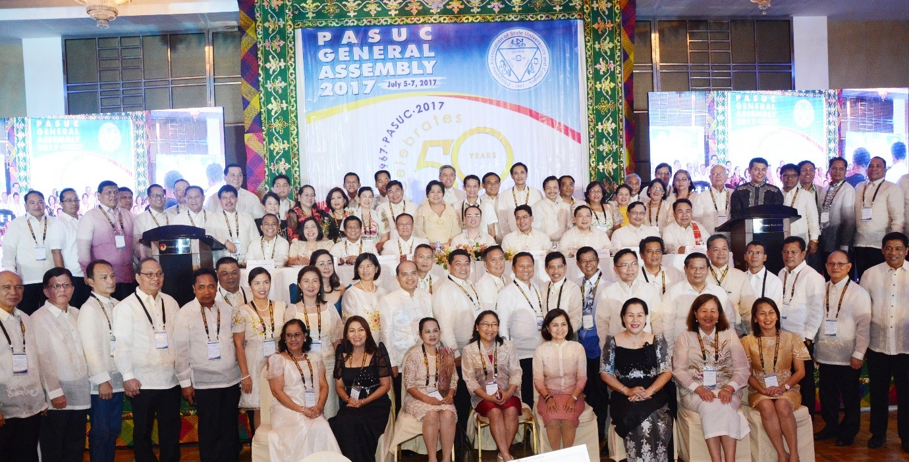

University of Science and Technology of Southern Philippines
The University of Science and Technology of Southern Philippines (USTP) is a state university established on August 16, 2016 by virtue of Republic Act 10919 through the amalgamation of the Mindanao University of Science and Technology (MUST) in Cagayan de Oro City, Misamis Oriental and the Misamis Oriental State College of Agriculture and Technology (MOSCAT) in Claveria, Misamis Oriental. Both campuses are located in Northern Mindanao, the Gateway to Mindanao, which offers a strategic locational advantage for the institution to train and develop students from all the other regions of Mindanao.
It has maintained its Level IV Status as State University (Highest Distinction) as adjudged by the Commission on Higher Education (CHED) and the Department of Budget and Management (DBM) and continues to be one of the 19 leading state universities in the Philippines.
USTP’s mission is to bring the world of work (industry) into the actual higher education and training of students, offer entrepreneurs the opportunity to maximize their business potentials through a gamut of services from product conceptualization to commercialization, and contribute significantly to the National Development Goals of food security and energy sufficiency through technology solutions.
The University boasts of a 7.3-hectare Cagayan de Oro campus with state-of-the-art infrastructure and facilities geared towards providing quality education. The conducive and inspiring learning environment with its advanced laboratories and amenities complements its excellent academic instruction and boost students’ learning experience. Its Claveria campus boasts of a 101.37-hectare rich agricultural land. USTP’s main campus will eventually be located at the institution’s 295.14-hectare property in Alubijid, Misamis Oriental. The University also has satellite campuses in Jasaan, Misamis Oriental, Panaon and Oroquieta, Misamis Occidental.
USTP CDO receives Most Outstanding Accounting Office award from the Association of Government Accountants of the Philippines (AGAP) Inc.
The Association of Government Accountants of the Philippines (AGAP) Inc. has recognized the University of Science and Technology of Southern Philippines (USTP) – Cagayan de Oro as one of the Most Outstanding Accounting Offices in 2016. The University received the award during the opening day ceremonies of AGAP’s annual convention-seminar at the Waterfront Cebu City Hotel in Lahug, Cebu scheduled on October 18 – 21, 2017.
USTP CDO received the same recognition in 2014. The award is conferred to institutions nominated by the Commission on Audit who exemplified the criteria of Accuracy, Timeliness, Reliability and Compliance to Accounting Rules and Regulations set by AGAP’s Committee on Awards.
Only four state colleges and universities (SUCs) were recognized by AGAP in 2016, namely: Bulacan Agricultural State College, Don Honorio Ventura Tech State University, Isabela State University, and USTP – CDO.
For 2016, a total of 25 offices all over the country were recognized by AGAP as Most Outstanding Accounting Offices.
USTP CDO hailed 2nd top performing school in Mechanical Engineering
The University of Science and Technology of Southern Philippines (USTP) – Cagayan de Oro has emerged as the second top performing school in the official results of the September 2017 Mechanical Engineer Licensure Examination published by the Professional Regulation Commission (PRC).
PRC announced that 3, 517 out of 5,098 passed the licensure exam given by the Board of Mechanical Engineering in Manila, Baguio, Cagayan de Oro, Cebu, Davao and Lucena.
For the past ten years, USTP Cagayan de Oro (formerly Mindanao University of Science and Technology) has maintained high passing rates in the field of mechanical engineering.
Dr. Rotoras re-elected to fourth term as PASUC president

For the fourth time in a row, Dr. Ricardo E. Rotoras, president of the University of Science and Technology of Southern Philippines (USTP) System, was re-elected unopposed as president of the Philippine Association of State Universities and Colleges (PASUC). The election was held during the PASUC 2017 General Assembly at Century Park Hotel, Metro Manila on July 5 to 7, 2017.
The general assembly also commemorated PASUC’s golden year with the theme “PASUC @50: At the Forefront of the Global Dynamics of Public Higher Education.” Distinguished local and international speakers and guests graced the three-day assembly.
PASUC has a total membership of 111 state universities and colleges to date.